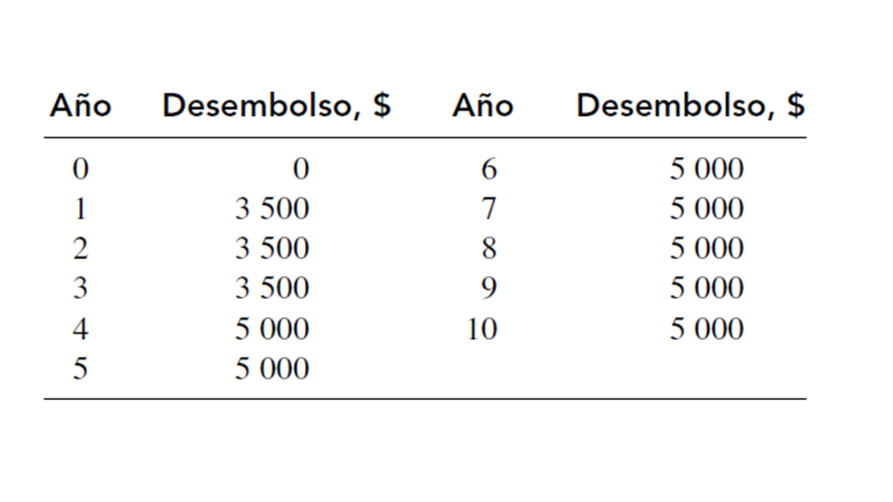
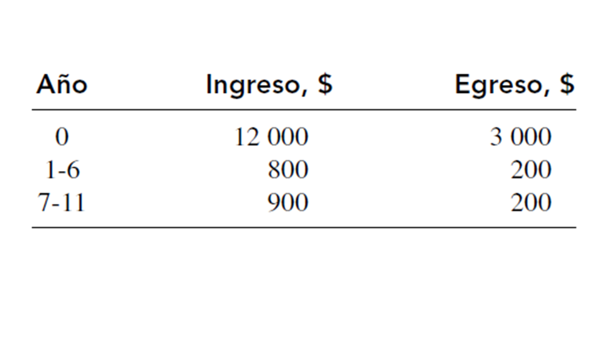
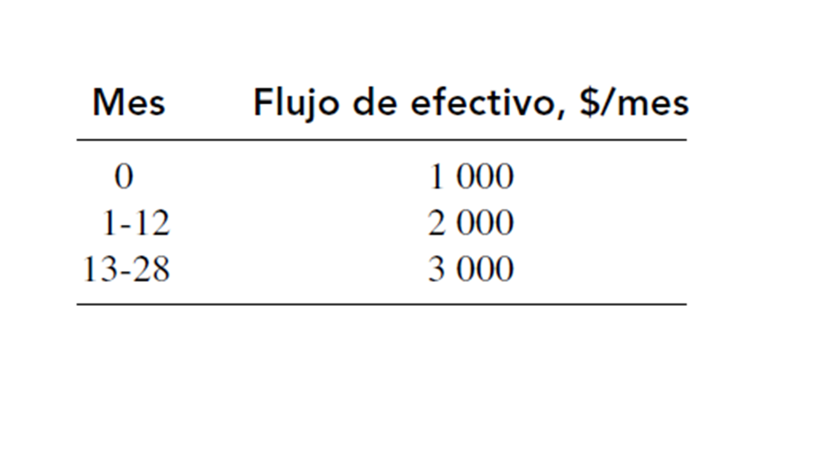
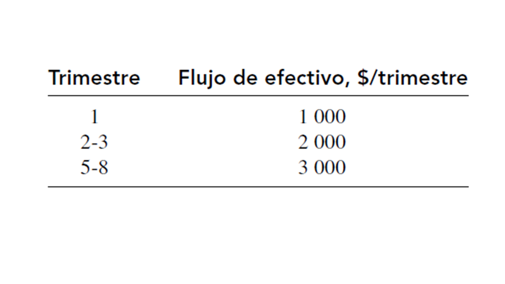

Ejercicios introducción a las Matemáticas Financieras¶
Ejercicios del libro de Ingeniería Económica de Blank y Tarquin, sexta edición.
Ejercicios del capítulo 3.¶
Temas:
Valor Presente (P).
Valor Futuro (F).
Anualidades (A).
3.1 Debido a que el 43% de todas las fatalidades que ocurren en las autopistas se deben a cambios de carril no intencionados que efectúan los conductores distraídos, Ford Motor Company y Volvo lanzaron un programa para desarrollar tecnologías para impedir los accidentes ocasionados por conductores somnolientos. Un dispositivo que cuesta $260 detecta las marcas de los carriles y hace sonar una alarma cuando un automóvil pasa de uno a otro. Si estos dispositivos se instalaran en 100 000 autos nuevos por año, comenzando dentro de tres años, ¿cuál sería el valor presente de su costo durante un periodo de diez años, con una tasa de interés de 10% anual?
Respuesta: P = $114.634.778
3.2 Un plan para obtener fondos en beneficio de las escuelas de Texas involucra un impuesto sobre la riqueza que podría recabar $56 para cada estudiante de cierto distrito escolar. Si hay 50 000 estudiantes en el distrito, y el flujo de efectivo comienza dentro de dos años, ¿cuál es el valor presente del plan para gravar la riqueza durante un horizonte de planeación de cinco años, con una tasa de interés de 8% anual?
Respuesta: P = $10.351.470
3.3 La empresa Amalgamated Iron and Steel compró una máquina nueva para doblar trabes grandes tipo I por medio de un pistón. La compañía espera doblar 80 trabes a $2 000 por unidad, durante cada uno de los primeros tres años, después de lo cual la empresa espera doblar 100 trabes por año a $2 500 por unidad hasta el año 8. Si la tasa mínima atractiva de rendimiento es de 18% anual, ¿cuál es el valor presente del ingreso esperado?
Respuesta: P = $823.707
3.4 Rubbermaid Plastics planea adquirir un robot lineal para empujar partes hacia una máquina de moldeo por inyección. Debido a la velocidad del robot, la compañía espera que los costos de producción disminuyan $100 000 por año en cada uno de los próximos tres, y $200 000 anuales en los siguientes dos. ¿Cuál es el valor presente neto del ahorro en los costos si la empresa usa una tasa de interés de 15% anual sobre dichas inversiones?
Respuesta: P = $442.109
3.5 Toyco Watercraft y un proveedor de refacciones tienen un contrato que involucra compras por $150 000 anuales, la primera compra se haría hoy y le seguirían otras similares durante los próximos cinco años. Determine el valor presente del contrato, con una tasa de interés de 10% anual.
Respuesta: P = $718.618
3.6 Calcule el valor presente neto en el año 0, de la serie de pagos siguiente.
Suponga que i = 10% anual.
{kind=link}

Respuesta: P = $26.993
3.9 Un ingeniero metalúrgico decide reservar cierta cantidad de dinero para la educación universitaria de su hija recién nacida. Estima que sus necesidades serán de $20 000 en los cumpleaños números 17, 18, 19 y 20. Si planea hacer depósitos uniformes que comenzarán dentro de tres años y continúa así hasta el año 16, ¿cuál debe ser el monto de cada depósito si la cuenta gana un interés de 8% anual?
Respuesta: A = $2.736
3.11 ¿Cuánto dinero tendría usted que pagar cada año, en ocho pagos iguales, si comienza dentro de dos años, para saldar un préstamo de $20 000 otorgado hoy por un familiar, si la tasa de interés fuera de 8% anual?
Respuesta: A = $3.759
3.12 Un ingeniero industrial planea su jubilación temprana dentro de 25 años. Él considera que puede reservar cómodamente $10 000 cada año a partir de hoy. Si planea comenzar a retirar dinero un año después de que haga su último depósito (es decir, en el año 26), ¿qué cantidad uniforme podría retirar cada año durante 30 años, si la cuenta obtiene una tasa de interés de 8% anual?
Respuesta: A = $71.021
3.13 Una compañía de instalaciones rurales proporciona energía a estaciones de bombeo por medio de generadores que usan diesel. Surgió una alternativa con la que la instalación podría usar gas natural para mover los generadores, pero pasarán algunos años antes de que se disponga de gas en sitios remotos. La empresa estima que el cambio a gas comenzaría dentro de dos años y ahorraría $15 000 por año. Con una tasa de interés de 8% anual, determine el valor por año equivalente(años 1 a 10) de los ahorros proyectados.
Respuesta: A = $12.930
3.18 Las cuentas de ahorro para toda la vida, conocidas como LSA, permitirían que la gente invirtiera dinero después de impuestos sin que se gravara ninguna de las ganancias. Si un ingeniero invierte $10 000 ahora y $10 000 por cada uno de los 20 próximos años, ¿cuánto habría en la cuenta inmediatamente después de hacer el último depósito, si la cuenta crece 15% por año?
Respuesta: F = $1.188.101
3.19 ¿Cuánto dinero se depositó anualmente, durante cinco años, si una cuenta tiene hoy un valor de $100 000 y el último depósito se hizo hace diez años? Suponga que el interés que ganó la cuenta fue de 7% anual.
Respuesta: A = $8.840
3.20 Calcule el valor futuro (en el año 11) de los ingresos y egresos siguientes, si la tasa de interés es de 8% anual.
{kind=link}

Respuesta: F = $31.559
Ejercicios del capítulo 4.¶
Temas:
Tasas nominales y efectivas.
Valor Presente (P).
Valor Futuro (F).
Anualidades (A).
4.4 Para una tasa de interés de 10% anual compuesta trimestralmente, determine el número de veces que se capitalizaría el interés: a) por trimestre, b) por año y c) en tres años.
Respuesta:
a. n = 1.
b. n = 4.
c. n = 12.
4.5 Para una tasa de interés de 0.50% trimestral, determine la tasa de interés nominal para: a) en un semestre, b) anual y c) en dos años.
Respuesta:
a. j = 1% nominal por semestre.
b. j = 2% nominal anual.
c. j = 4% nominal por dos años.
4.6 Para una tasa de interés de 12% anual capitalizable cada 2 meses, determine la tasa de interés nominal para: a) 4 meses, b) 6 meses y c) 2 años.
Respuesta:
a. j = 4% nominal por cuatro meses.
b. j = 6% nominal por seis meses.
c. j = 24% nominal por dos años.
4.10 Una tasa de interés de 16% anual, compuesto trimestralmente, ¿a qué tasa anual de interés efectivo equivale?
Respuesta: i = 16,99% E.A.
4.14 Una tasa de interés de 1% mensual, ¿a qué tasa efectiva por dos meses equivale?
Respuesta: i = 2,01% bimestral.
4.15 Un interés de 12% anual compuesto mensualmente, ¿a cuáles tasas nominal y efectiva por 6 meses equivale?
Respuesta: i = 6,15% semestral.
4.16 a) Una tasa de interés de 6.8% por periodo semestral, compuesto semanalmente,
¿a qué tasa de interés semanal es equivalente?
¿La tasa semanal es nominal o efectiva?
Suponga 26 semanas por semestre.
Respuesta:
a. i = 0,262% semanal.
b. Efectiva.
4.21 Un compañía que se especializa en el desarrollo de software para seguridad en línea, quiere tener disponibles $85 millones para dentro de 3 años pagar dividendos accionarios. ¿Cuánto dinero debe reservar ahora en una cuenta que gana una tasa de interés de 8% anual, compuesto trimestralmente?
Respuesta: P = $67.021.920
4.22 Debido a que las pruebas con bombas nucleares se detuvieron en 1992, el Departamento de Energía de los Estados Unidos ha estado desarrollando un proyecto de láser que permitirá a los ingenieros simular en el laboratorio las condiciones de una reacción termonuclear. Como los costos se dispararon en exceso, un comité de congresistas emprendió una investigación y descubrió que el costo estimado por el desarrollo del proyecto se incrementó a una tasa promedio de 3% mensual durante un periodo de 5 años. Si la estimación del costo originalmente fue de $2.7 mil millones hace 5 años, ¿cuál es el costo que se espera hoy?
Respuesta: F = $15.907 millones
4.23 Hoy, una suma de $5 000 con tasa de interés de 8% anual compuesto semestralmente, ¿a cuánto dinero equivalía hace 8 años?
Respuesta: P = $2.669,54
4.24 En un esfuerzo por garantizar la seguridad de los usuarios de teléfonos celulares, la Comisión Federal de Comunicaciones de los Estados Unidos (FCC) exige que los aparatos tengan un número de radiación específica absorbida (REA) de 1.6 watts por kilogramo (W/kg) de tejido, o menos. Una compañía nueva de teléfonos celulares considera que si hace publicidad a su cantidad favorable de 1.2 REA, incrementará sus ventas en $1.2 millones dentro de tres meses, cuando salgan a la venta sus equipos. Con una tasa de interés de 20% anual, compuesto trimestralmente, ¿cuál es la cantidad máxima que ahora debe gastar la compañía en publicidad, con el fin de mantenerse en equilibrio?
Respuesta: P = $1,14286 millones
4.25 La Identificación por Radio Frecuencia (IDRF) es la tecnología que se usa para que los conductores crucen rápido las casetas de cobro, y también con la que los rancheros rastrean el ganado de la granja al tenedor. Wal-Mart espera comenzar a usarla para dar seguimiento a los productos dentro de sus tiendas. Si los productos con etiquetas de IDRF dan lugar a un mejor control de los inventarios, la compañía ahorraría $1.3 millones mensuales a partir de tres meses después de hoy, ¿cuánto podría desembolsar la empresa para implantar la tecnología, con una tasa de interés de 12% anual, compuesto mensualmente, si desea recuperar su inversión en 2 1/2 años?
Respuesta: P = $30,9885 millones
4.26 El misil Patriot, desarrollado por Lockheed Martin para el ejército estadounidense, se diseñó para derribar aeronaves y a otros misiles. El costo original del Patriot Avanzado con Capacidad-3, estaba planeado para costar $3.9 mil millones, pero debido al tiempo adicional requerido para crear el código de computación y a las pruebas fallidas ocasionadas por vientos fuertes en la instalación de White Sands Missile Range, el costo real fue mucho más elevado. Si el tiempo total de desarrollo del proyecto fue de 10 años y los costos aumentaron a una tasa de 0.5% mensual, ¿a cuánto ascendió el costo final?
Respuesta: F = $7,09565 mil millones
4.27 Es común que las tarjetas de video basadas en el procesador GTS GeForce de Nvidia cuesten $250, pero esta compañía lanzó una versión ligera del chip que cuesta $150. Si cierto fabricante de juegos de video compraba 3 000 chips por trimestre, ¿cuál fue el valor presente de los ahorros asociados con el chip más barato, durante un periodo de 2 años con una tasa de interés de 16% anual, compuesto trimestralmente?
Respuesta: P = $2.019.823
4.28 A fines del primer trimestre del año 2000, una huelga de 40 días en Boeing dio como resultado una reducción en 50 entregas de aviones jet. Con un costo de 20 millones por avión ¿cuál fue el costo equivalente a final del año de la huelga (por ejemplo del último trimestre) con una tasa de interés de 18% anual compuesto mensualmente?
Respuesta: F = $1.143,4 millones
4.29 La división de productos ópticos de Panasonic planea una expansión de su edificio que tendrá un costo de $3.5 millones, para fabricar su poderosa cámara digital Lumix DMC. Si la compañía usa para todas las inversiones nuevas una tasa de interés de 20% anual, compuesto trimestralmente, ¿cuál es la cantidad uniforme por trimestre que debe obtener para recuperar su inversión en 3 años?
Respuesta: A = $0,394889 millones
4.30 Thermal Systems, compañía que se especializa en el control de olores, deposita hoy $10 000, $25 000 al final del sexto mes, y $30 000 al final del noveno mes. Calcule el valor futuro (al final del año 1) de los depósitos, con una tasa de interés de 16% anual, compuesto trimestralmente.
Respuesta: F = $69.939
4.31 Lotus Development tiene un plan de renta de software denominado SmartSuite, disponible en web. Puede disponerse de cierto número de programas a $2.99 por 48 horas. Si una compañía constructora usa el servicio 48 horas en promedio por semana, ¿cuál es el valor presente de los costos por rentar durante 10 meses con una tasa de 1% de interés mensual, compuesto semanalmente? (Suponga 4 semanas por mes.)
Respuesta: P = $113,68
4.32 Northwest Iron and Steel analiza si incursiona en el comercio electrónico. Un paquete modesto de esta modalidad se encuentra disponible por $20 000. Si la compañía desea recuperar el costo en 2 años, ¿cuál es la cantidad equivalente del ingreso nuevo que debe obtenerse cada 6 meses, si la tasa de interés es de 3% trimestral?
Respuesta: A = $5.784
4.33 Metropolitan Water Utilities compró una superficie acuática del distrito de riego Elephant Butte, con un costo de $100 000 por mes, para los meses de febrero a septiembre. En lugar de hacer un pago mensual, la empresa hará un solo pago de $800 000 al final del año (es decir, al final de diciembre) por el agua utilizada. El retraso del pago representa en esencia un subsidio de parte de la empresa al distrito de riego. Con una tasa de interés de 0.25% mensual, ¿cuál es el monto del subsidio?
Respuesta: Subsidio = $13.103
4.34 Scott Specialty Manufacturing analiza consolidar todos sus servicios electrónicos con una compañía. Si compra un teléfono digital de AT&T Wireless la compañía podría comprar, por $6.99 al mes, servicios inalámbricos de correo electrónico y fax. Por $14.99 mensuales obtendría acceso ilimitado a la web y funciones de organización de personal. Para un periodo de contratación de 2 años, ¿cuál es el valor presente de la diferencia entre los servicios, con una tasa de 12% de interés anual compuesto mensualmente?
Respuesta: P = $169,95
4.38 Para los flujos de efectivo que se muestran a continuación, determine el valor presente (tiempo 0), usando una tasa de 18% de interés anual, compuesto mensualmente.
{kind=link}

Respuesta: P = $58.273
4.39 A continuación se presentan los flujos de efectivo (en miles) asociados con el sistema de aprendizaje Touch, de Fisher Price. Calcule la serie uniforme trimestral, en los trimestres 0 a 8, que sería equivalente a los flujos de efectivo mostrados, con una tasa de interés de 16% anual, compuesto trimestralmente.
{kind=link}

Respuesta: A = $1.797,19
4.40 Un ingeniero deposita $300 por mes en una cuenta de ahorros con una tasa de interés de 6% anual, compuesto semestralmente. ¿Cuánto habrá en la cuenta al final de 15 años? Suponga que no hay ningún periodo intermedio de capitalización.
Respuesta: F = $85.635,75